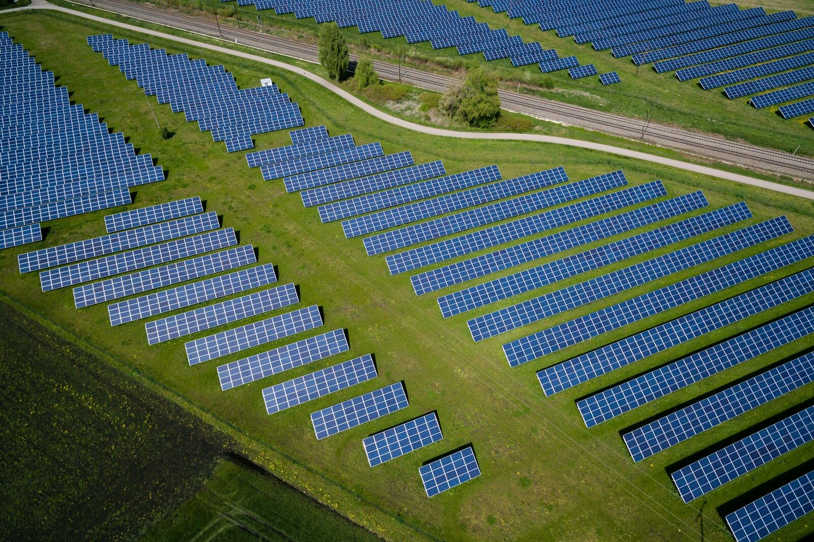

The best time to mow a solar farm is 2am
Ask why mowing happens in daylight and the answer is usually just: because that is when people work. Take the person off the machine and the assumption goes with them.…

Ask why mowing happens in daylight and the answer is usually just: because that is when people work.
Take the person off the machine and the assumption goes with them. LiDAR and RTK navigation do not care about daylight. The machine holds the same two centimetre lines at 2am that it holds at noon.
Night work is not a novelty, it is where the practical advantages stack up. Summer heat is hard on any machine and harder on batteries, and the coolest hours are the kindest ones to run in. The site is empty, so the machine works around nobody. And a mower that cuts through the night as well as the day is effectively two machines for the price of one when a growth flush hits.
There is a heat management angle worth being straight about too. Extreme heat days are hard on all electric equipment, and the sensible protocol on a stinker is the same one you would give a human crew: do the work in the cool of the night and early morning, and sit out the worst of the afternoon. A machine that mows at night makes that protocol free.
The overseas proof point for the platform class we run is a golf course in Korea, mowed overnight, unmanned, on slopes to 30 degrees, precisely because members tee off at dawn. Solar farms have no members, but the logic transfers: the ground gets cut while nothing else is happening.
Grass grows around the clock. There is no longer a reason cutting it should keep office hours.
AutoAcre is an autonomous mowing operator based in the Northern Rivers, NSW, focused on solar-farm and commercial vegetation management. ben@autoacre.com.au